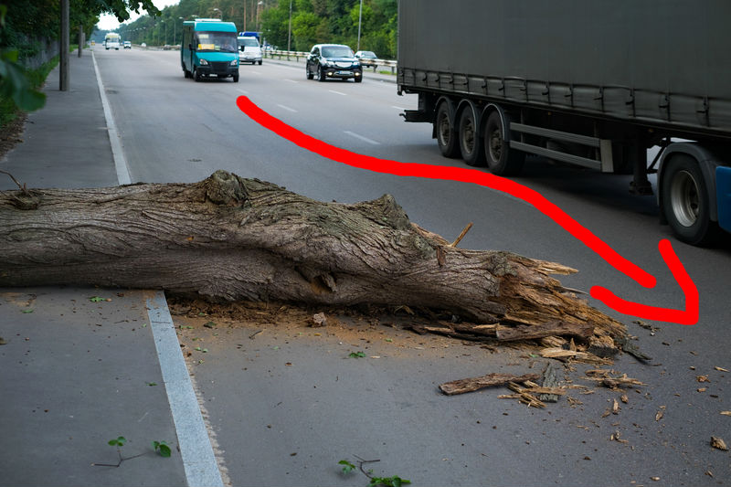
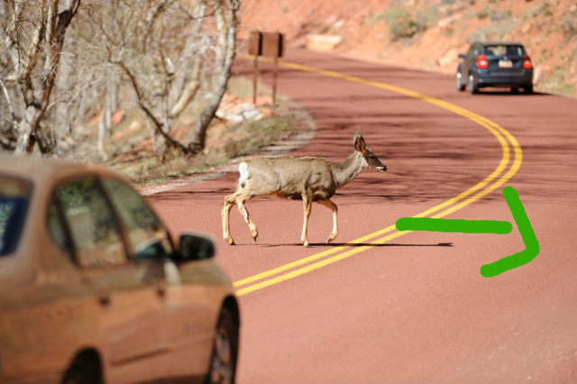

SEARCH
Anything can be a road hazard, even nature
Potholes are something we as Winnipegers should all know quite well
If you plan on going camping or are even driving by wooded areas, keep a keen eye out for wildlife
Evaluate
Make a note of the fallen tree and the fact that you will need to change lanes
or that someone will have to change lanes into yours.
Note that you will either have to change lanes or slow down to avoid the pothole.
likewise with drivers around you if the pothole isn't in you lane

Notice the direction of the deer and recognise that it will most likely cross your lane, and you will need to slow down
Execute
Now it is time to signal, check your mirror, shoulder check, and change lanes to avoid hitting the tree
Once again, signal, check you mirror, shoulder check, and change lanes.
Slow down your car to avoid hitting the deer and let it cross. Tap your horn if needed